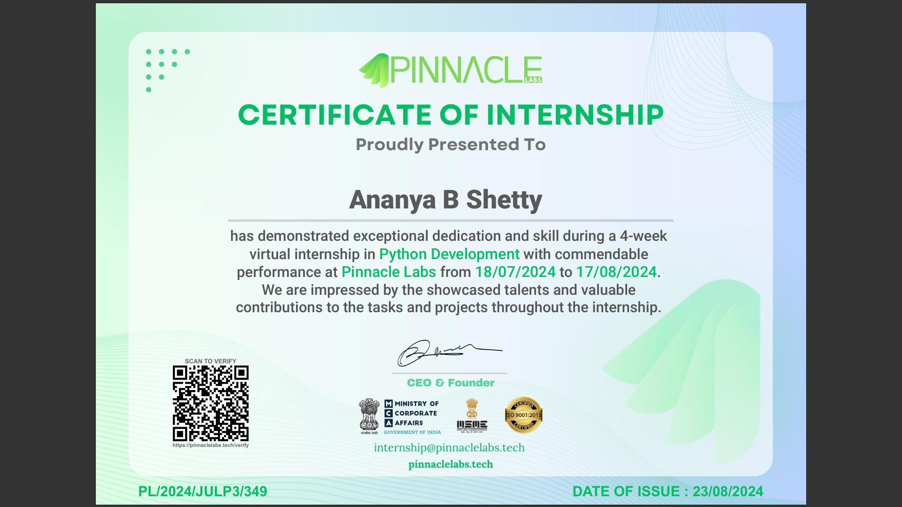
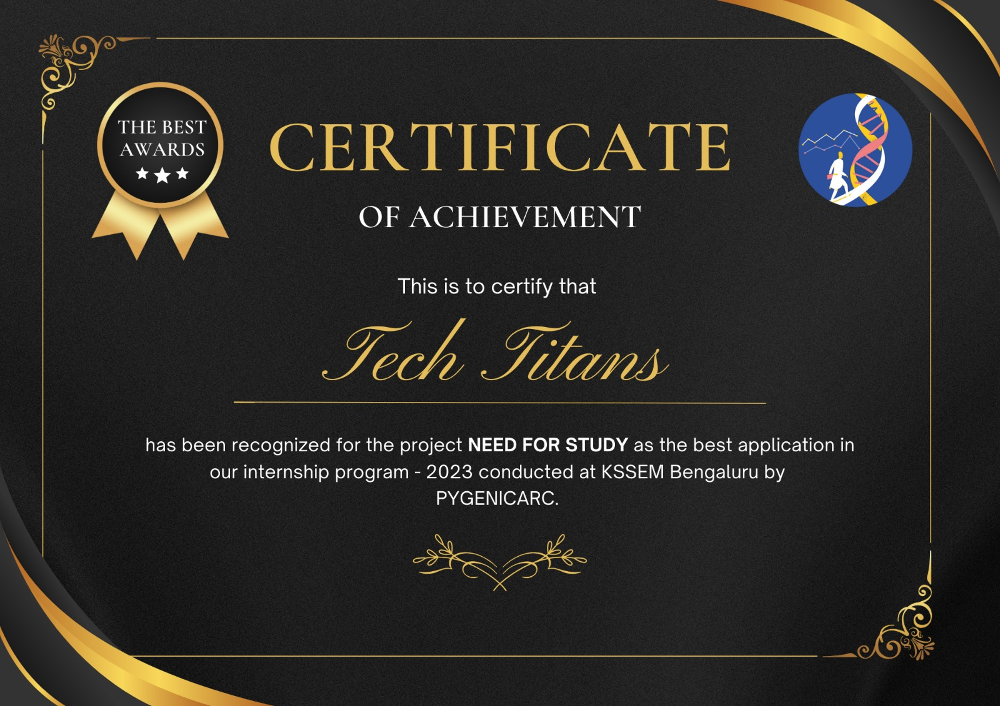

Certifications
 .png)

Hi, I'm Ananya B Shetty, a passionate Web Developer with a strong foundation in Electronics and Communication Engineering, currently pursuing my Bachelor's at K.S. School of Engineering and Management. With a CGPA of 8.54, I have developed interest in technology, particularly in web development.
I have hands-on experience in web technologies, having developed an award-winning educational website during my internship at PygenicArc. This project helped me hone my skills in HTML, CSS, and JavaScript, while also teaching me the importance of teamwork and leadership. It’s been a rewarding journey, and I’m excited to continue expanding my expertise in areas like AI/ML and IoT.
One of my biggest strengths is my ability to lead and manage projects. As a member of my college’s research team and a Project Management Intern at RitikaYourHealthCoach(RYHC), I have consistently demonstrated strong organizational and problem-solving abilities. These experiences have sharpened my soft skills, including communication, decision-making, and time management.
My ultimate goal is to combine my technical skills and my passion for learning to build meaningful, impactful projects. I'm eager to contribute to an innovative organization that values continuous learning and growth, where I can make a real difference with my skills in both software development and project management.
In addition to my technical pursuits, I am actively involved in volunteer work through the Service Scheme (NSS) and have served as a Campus Ambassador at E-cell IIT Bombay. My experiences in leadership and community service have greatly enriched my personal and professional growth, inspiring me to continue contributing to society while advancing my career.
| Domain | Skills |
|---|---|
| Frontend Development | HTML, CSS, JavaScript, Bootstrap |
| Version Control and Collaborationt | GitHub |
| Programming Languages | Python, C, Java (Basic) |
| Embedded Systems | Arduino UNO, ESP-32, MATLAB |
| Soft Skills | Leadership, Communication, Project Management |
Fluent
Fluent
Native
Native
10/2023 - 11/2023
Gained knowledge in HTML, CSS, and JavaScript basics.
Project: Developed an educational website providing study materials for school students.
16/07/2024 - Present
As a Campus Ambassador for E-cell, IIT-Bombay, I actively promote entrepreneurship initiatives on my campus, connecting students with resources, workshops, and events that foster innovation and leadership skills.
18/07/2024 - 17/08/2024
Project: An alarm program with customizable tones and snooze options.
Built a monthly calendar app that allows users to set and manage reminders.
Created a quiz platform with customizable quizzes, scoring, and a user-friendly interface.
29/08/2024 - Present
I handle social media scheduling, analyze engagement, and coordinate with the team—gaining skills in project management and digital marketing.
As a Campus Ambassador for E-Cell, IIT Bombay, I've undertaken a range of tasks that helped deepen my understanding of entrepreneurship and college club dynamics:
College Clubs: I began by interviewing our college's E-Cell and similar clubs, gaining insights into their functioning. This gave me an initial perspective on club management and networking.
National Entrepreneurship Challenge (NEC): I worked with a team to either establish or enhance our E-Cell, guiding us through tasks that build entrepreneurial momentum. This involved registering our team, completing the initial Headstart tasks, and documenting progress.
Developing a Business Model: I created a viable business idea by identifying a local problem, designing a solution, and crafting a detailed pitch deck, covering aspects like customer segments, revenue streams, and value propositions.
Networking on the PhysicsWallah Platform: I registered our E-Cell on the PhysicsWallah ambassador platform, gaining a small milestone in return.
Forming and Engaging Teams: I established an E-Cell team by circulating a Google Form and collecting responses from interested students, fostering collaborative spirit for future events.
Entrepreneurship Workshop Planning: I designed a structured workshop, planned promotion strategies, and set incentives to engage students, along with a timeline for successful execution.
National Case Study Competition: Lastly, I participated in the National Case Study competition by completing registration and the first round, exploring logistics and supply chain themes for real-world application.
These tasks strengthened my leadership, event management, and networking skills, bringing me closer to fostering a vibrant entrepreneurial culture on campus.
At PygenicArc:
Project Overview: Created the frontend for an educational website dedicated to providing school students with easy access to study materials.
Scope: Focused on building an intuitive and visually appealing user interface.
Tools and Skills Used: Applied HTML for structuring content, CSS for styling and layout, and basic JavaScript for interactive elements.
Objective: Designed the website to be simple to navigate, helping students find resources efficiently.
Outcome: Developed a responsive, user-friendly frontend that enhances students' learning experiences.
As a Project Management Intern at RitikaYourHealthCoach(RYHC), I help manage and schedule social media content. This experience has taught me:
-How to plan and organize posts for consistent engagement
-Skills in analyzing social media data to improve our strategy
-Effective communication with team members to streamline content creation
It’s been great to support a health-focused mission while building my project management and digital marketing skills.
During my Python Development Course at Pinnacle Labs, I completed three main projects:
-Developed an alarm program in Python with customizable tones and snooze options.
-Built a monthly calendar app that allows users to set and manage reminders.
-Created a quiz platform with customizable quizzes, scoring, and a user-friendly interface, suitable for both educational and entertainment use.
As a Teacher in the Government School in Gottigere, Bangalore:
-Responsibilities:Assisted in teaching science lab experiments to students at a Government School.
-Impact:Inspired curiosity and practical skills in students, enhancing their overall educational experience.
-Skills Developed: Aimed to foster students' understanding of scientific concepts through hands-on learning.
Overall loved the experience!